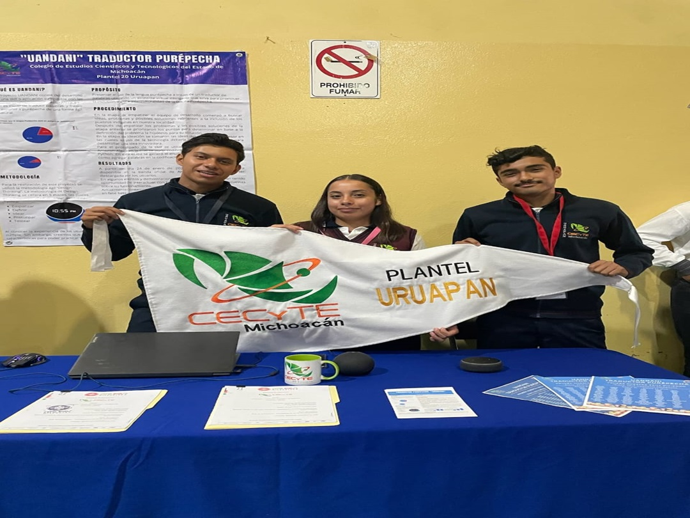
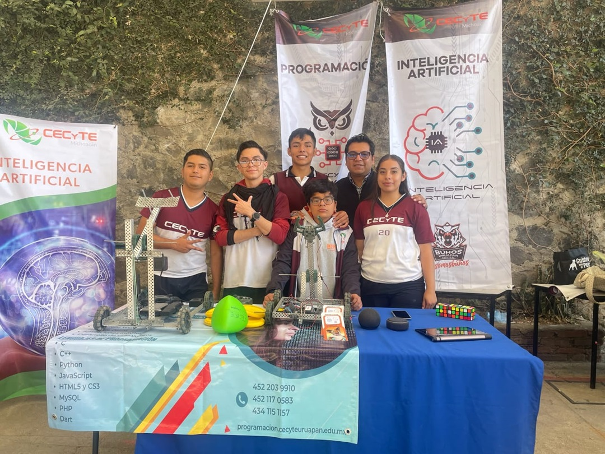
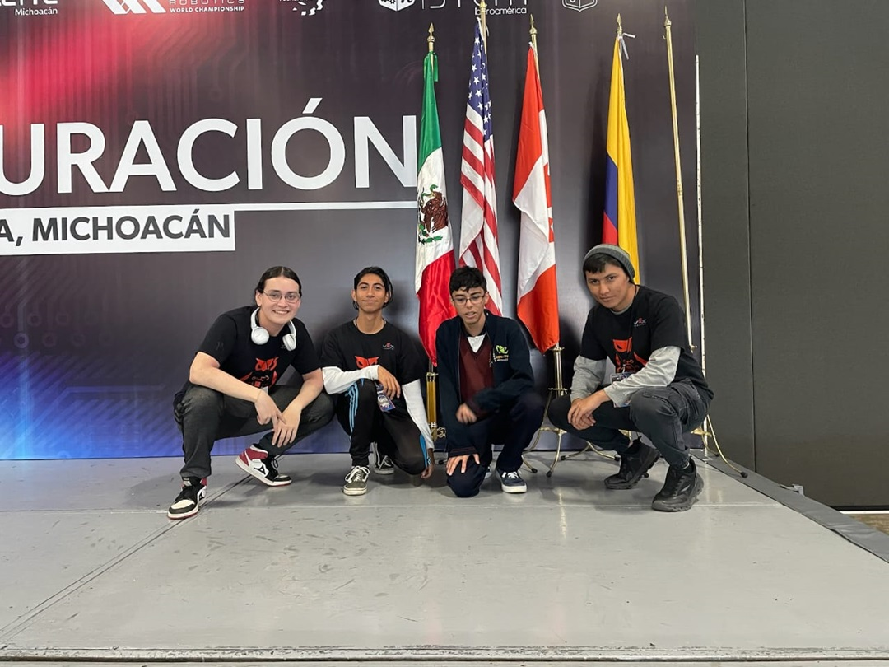
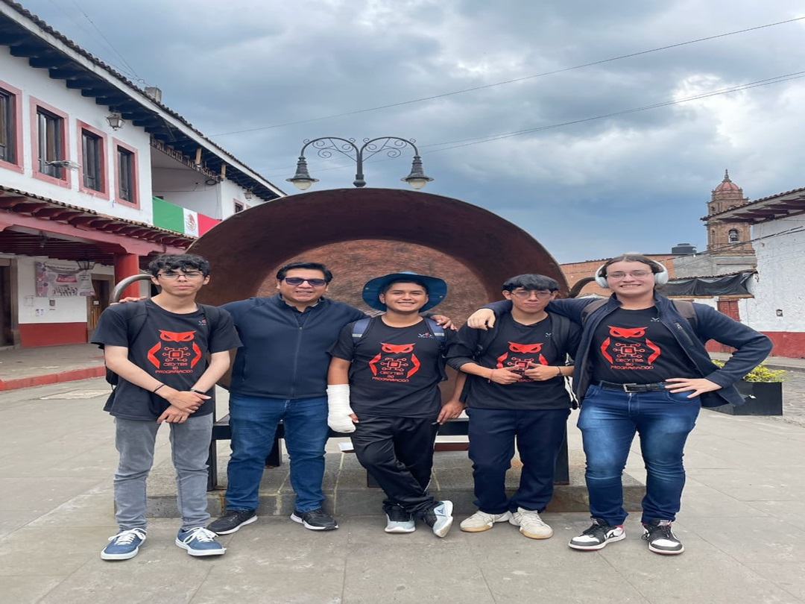
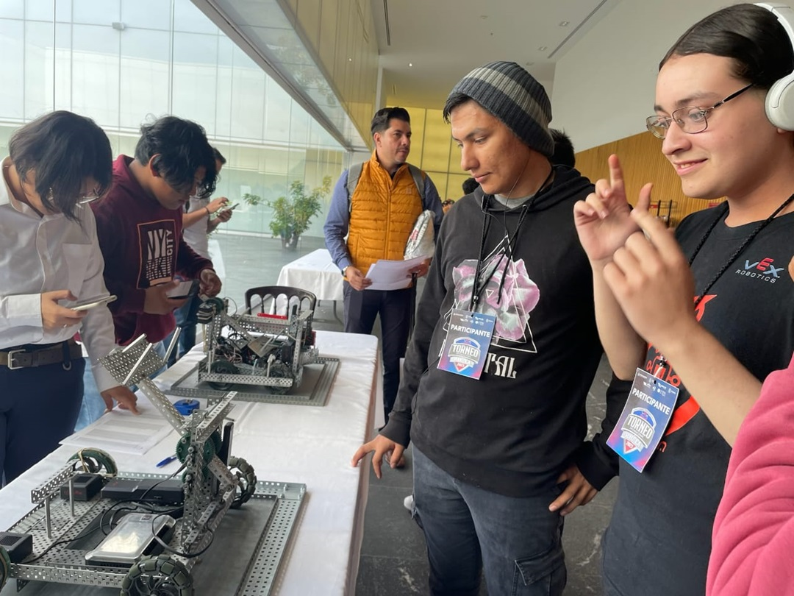
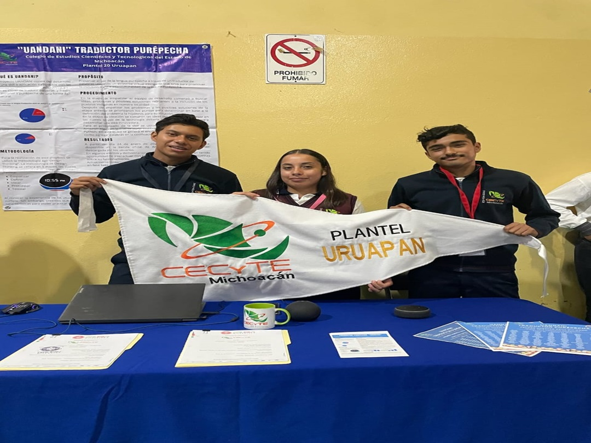
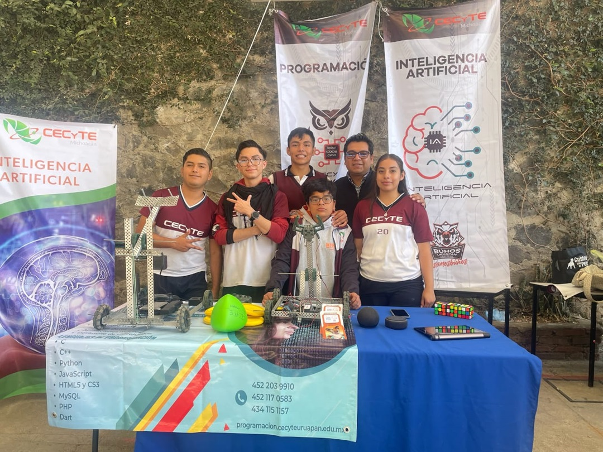
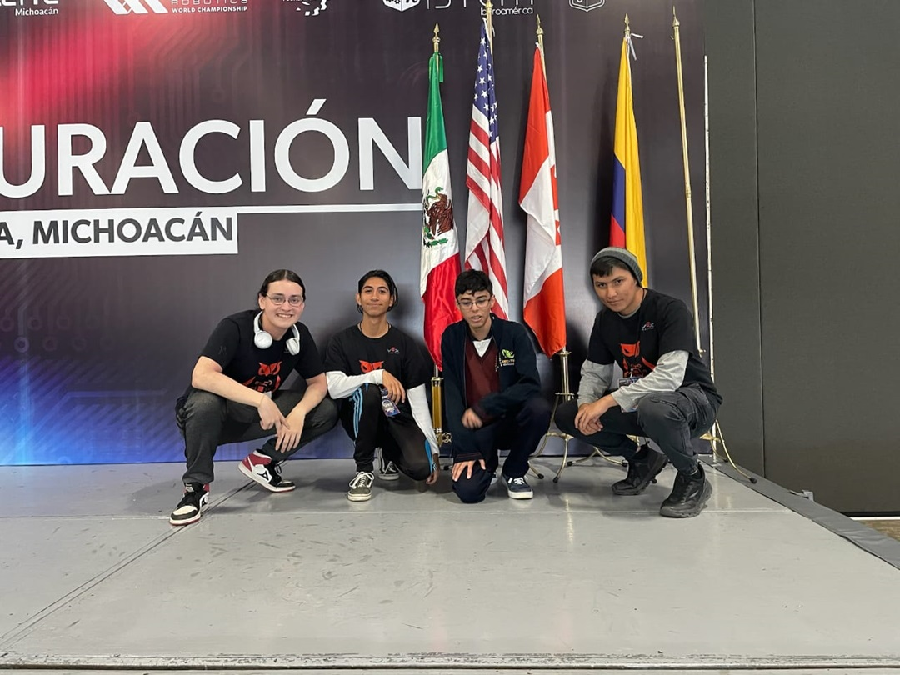
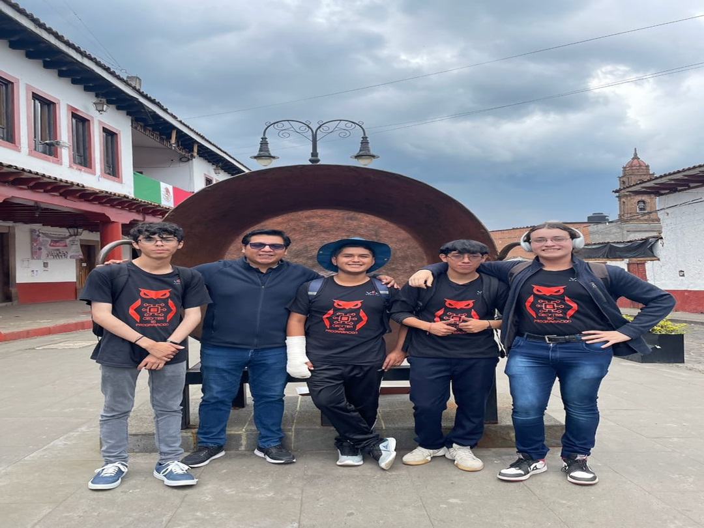
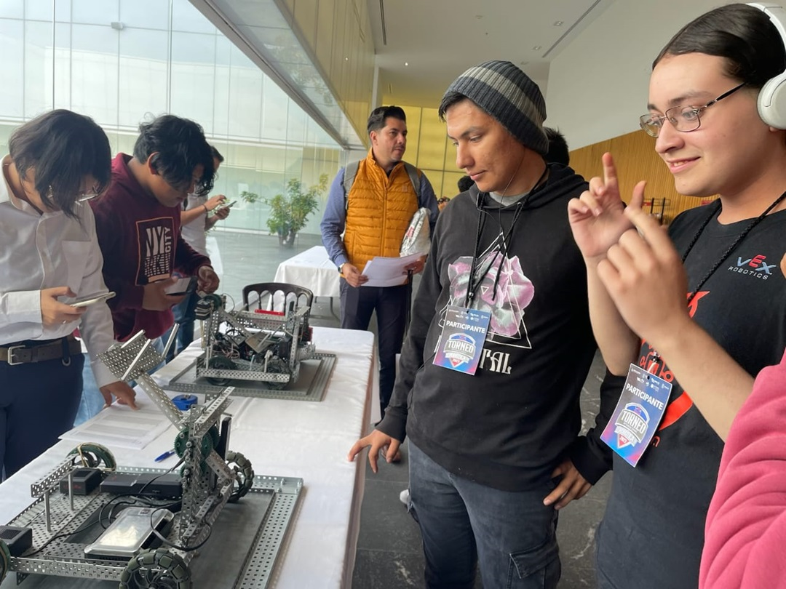

Programación

La especialidad de programación te brinda la oportunidad de dominar diferentes lenguajes de programación, entender los principios fundamentales de la lógica computacional y desarrollar habilidades de resolución de problemas que te destacarán en cualquier campo que elijas. Además, la comunidad de programadores es increíblemente colaborativa y apasionada, lo que significa que nunca estarás solo en tu viaje de aprendizaje.
Pero quizás lo más emocionante de todo es que la programación te ofrece la capacidad de convertir tus ideas en realidad. Ya sea que sueñes con crear una aplicación que cambie el mundo o simplemente quieras desarrollar herramientas que mejoren tu vida diaria, la programación te brinda las herramientas para hacerlo posible.
En resumen, la especialidad de programación es mucho más que aprender un conjunto de habilidades técnicas; es abrir la puerta a un universo de creatividad, innovación y oportunidades infinitas. Si estás listo para embarcarte en un viaje que te llevará hacia el futuro, la programación es el camino que debes tomar.
 








